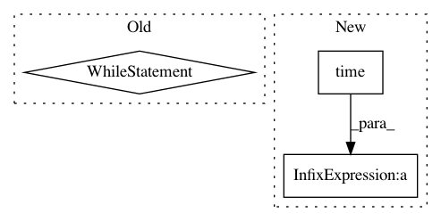

4f2535df9cb702854ef892c0d2a92ef068636ce0,examples/reinforcement_learning/baselines/algorithms/sac/sac.py,,learn,#Any#Any#Any#Any#Any#Any#Any#Any#Any#Any#Any#Any#Any#Any#Any#Any#Any#Any#Any#Any#,242
Before Change
rewards = []
sac_trainer.load_weights()
while frame_idx < test_timesteps:
state = env.reset()
state = state.astype(np.float32)
episode_reward = 0
if frame_idx < 1:
_ = sac_trainer.policy_net([state]) // need an extra call to make inside functions be able to use forward
for step in range(max_steps):
action = sac_trainer.policy_net.get_action(state, deterministic=DETERMINISTIC)
next_state, reward, done, _ = env.step(action)
next_state = next_state.astype(np.float32)
env.render()
done = 1 if done ==True else 0
state = next_state
episode_reward += reward
frame_idx += 1
// if frame_idx % 50 == 0:
// plot(frame_idx, rewards)
if done:
break
print("Episode: ", frame_idx / max_steps, "| Episode Reward: ", episode_reward)
rewards.append(episode_reward)
After Change
plot(rewards, Algorithm_name="SAC", Env_name=env_id)
sac_trainer.save_weights()
print("Episode: {}/{} | Episode Reward: {:.4f} | Running Time: {:.4f}"\
.format(eps, train_episodes, episode_reward, time.time()-t0 ))
rewards.append(episode_reward)
sac_trainer.save_weights()
In pattern: SUPERPATTERN
Frequency: 3
Non-data size: 3
Instances
Project Name: tensorlayer/tensorlayer
Commit Name: 4f2535df9cb702854ef892c0d2a92ef068636ce0
Time: 2019-07-04
Author: 1402434478@qq.com
File Name: examples/reinforcement_learning/baselines/algorithms/sac/sac.py
Class Name:
Method Name: learn
Project Name: tensorlayer/tensorlayer
Commit Name: 4f2535df9cb702854ef892c0d2a92ef068636ce0
Time: 2019-07-04
Author: 1402434478@qq.com
File Name: examples/reinforcement_learning/baselines/algorithms/sac/sac.py
Class Name:
Method Name: learn
Project Name: tensorlayer/tensorlayer
Commit Name: 16a31e2c9fedc654e9117b42b8144adf1d0e4900
Time: 2020-02-03
Author: 34995488+Tokarev-TT-33@users.noreply.github.com
File Name: examples/reinforcement_learning/tutorial_A3C.py
Class Name:
Method Name:
Project Name: keras-team/autokeras
Commit Name: b048efa4f956b80266942caea6ee8b4311e1d17a
Time: 2018-04-08
Author: jin@tamu.edu
File Name: autokeras/classifier.py
Class Name: ClassifierBase
Method Name: fit